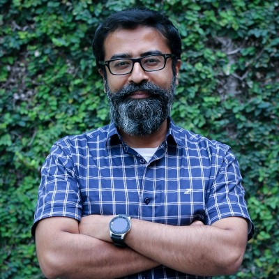
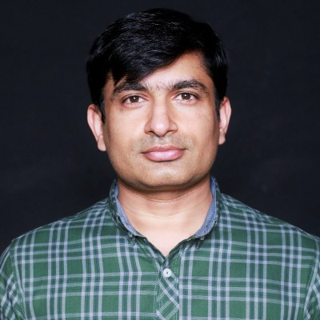

Muhammad
Ahmad
Waseem.
I build production ML systems — speech recognition, CUDA kernels, and quantized models that run fast on real hardware. Currently finishing my M.S. in Computer Science at University at Buffalo, where I research ASR for children's speech and efficient inference.
7 peer-reviewed publications. 3+ years shipping models from research to government-scale deployment. Available July 2026.
Things I've built
that matter.
A cross-section of six projects spanning speech recognition, GPU systems, computer vision, and production geospatial tooling. Each ships real metrics — not demos.


What I'm working on.
Live snapshot of current research threads at UB. Updated weekly.
What advisors say.
Three years of close research collaboration, in their words.
You bring a lot of experience to our team and your presence allows other team members to grow as well.

Your exceptional skills in computer vision give us a lot of confidence in picking new projects.

You have been a very hard-working student and your never-give-up attitude is not found in many people.